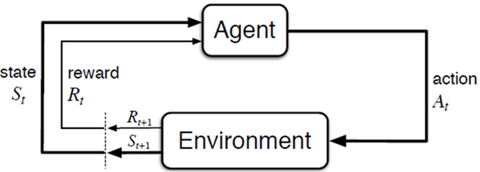
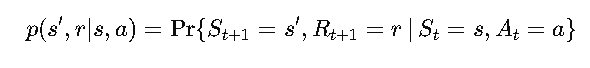
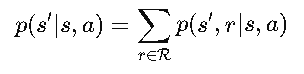
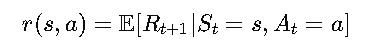

Introduction to Markov Decision Processes (MDPs):
~ The Blueprint of Decision-Making ~
Imagine you’re navigating a maze. At every step, you have to make a decision: go left, right, or straight. Each move brings you closer to the exit—or maybe to a dead end. What if you had a way to make decisions that ensured you’d always find the shortest path? Enter Markov Decision Processes (MDPs): the mathematical framework that turns complex decision-making problems into solvable puzzles.
What is an MDP?
At its core, an MDP is a way to model sequential decision-making. You’re an agent in an environment, making decisions (or "actions") that affect the environment’s state and, in turn, determine the rewards you receive. The ultimate goal? Choose actions that maximize your rewards over time.
Think of an MDP as your personal strategy guide to life (or, at least, a very organized maze).
A MDP is a process which:
- Is a sequential decision problem (a sequence of decisions)
- Operates in a fully observable, stochastic environment
- Makes decisions by making transitions between states in the environment and obtaining rewards
- Obeys the Markov property: transitions only depend on the most recent state and action, and no prior history.
Key Components of an MDP

States (𝑆):
These represent the different situations you can be in.
- Example: In a maze, a state could be your current position.
- Fun Analogy: Think of states as "checkpoints" in a video game—your starting point, where you save progress, and your ultimate goal.
Actions (A):
The choices available to you at each state.
- Example: In the maze, you can move left, right, up, or down.
- Fun Analogy: Actions are like deciding whether to attack, defend, or heal in a turn-based RPG.
Transition Function (P(s' | s, a)):
This defines the probabilities of moving to a new state (s') given your current state (s) and action (a)
- Example: If you move left in the maze, there’s a 70% chance you’ll go left and a 30% chance you’ll slip on a banana peel and stay in the same spot.
- Fun Analogy: It’s like rolling a dice to see if your character successfully picks a lock.
Rewards (R(s, a, s')):
The immediate payoff for taking an action in a state and ending up in a new state.
- Example: Finding a treasure chest in the maze gives you a reward of +10
- Fun Analogy: Rewards are like the coins you collect in Super Mario—they’re what you’re aiming for!
Discount Factor (γ):
This determines how much you value future rewards compared to immediate ones.
- Example: If 𝛾 = 0.9, you slightly favor immediate rewards but still care about future ones. If 𝛾=1, you’re super patient.
- Fun Analogy: It’s like deciding whether to spend your gold now or save it for a shiny sword later.
Markov Decision Processes: What Makes Them Tick?
Let’s dive into the essentials of Markov Decision Processes (MDPs)—the foundation of many reinforcement learning tasks. If your problem has the Markov Property, you’re officially in MDP territory! But what exactly does that mean? Let’s break it down step by step in plain, fun terms.
Another Lens on MDPs
If your reinforcement learning task satisfies the Markov Property, it qualifies as an MDP. The Markov Property means that the future is independent of the past, as long as you know the present. In simpler terms:
"What happens next depends only on where you are right now, not how you got there."
For example:- If you’re in a maze, knowing your current position is enough to decide your next move.
- You don’t need a full replay of all the wrong turns you took to get there.
Finite MDPs: Keeping Things Manageable
When the state and action sets are finite (not infinite), we have a finite MDP. This makes life simpler because you can actually map out all the possibilities, like drawing a flowchart for a video game level.
Defining a Finite MDP
To fully describe a finite MDP, you need to specify three main components:
-
State and Action Sets
- States(S) : All the possible situations your agent can encounter.Example: Every square in a grid-world maze.
- Actions(A) :The choices your agent can make.Example: Move left, right, up, or down.
Think of this as the "menu" of options available in any given situation.
-
One-Step Dynamics
This is where the magic of transitions and rewards comes into play. The dynamics answer these two questions:
- If I take action 𝑎 in state 𝑠, where will I end up?
Transition probabilities (p(s', r | a)) tell you the likelihood of ending up in a new state s' and receiving reward r.
Example: In the maze, taking action "go right" might:
- Move you right with an 80% chance.
- Leave you in the same spot (oops!) with a 20% chance.
- What reward will I get for taking that action?
- Rewards (r) can be good (yay!) or bad (boo!). Example: Reaching the goal = +10, falling off a cliff = −100.
Mathematically:

- If I take action 𝑎 in state 𝑠, where will I end up?
-
Simplified Transition and Reward Functions
If we only care about where we end up (𝑠′) and the expected rewards (𝑟) without breaking them down into probabilities, we use:
- State Transition Probabilities:

This tells us the chance of landing in 𝑠′after taking 𝑎 in 𝑠, regardless of the reward.
- Expected Rewards:

This gives us the average reward we expect for taking action 𝑎 in state 𝑠.
- State Transition Probabilities:
What Makes This "Known"?
In many cases, these components are assumed to be known. This assumption makes MDPs a mathematically idealized model. In real-world applications, we often don’t know all the details and have to estimate them through experience (hello, reinforcement learning!).
States and Observations: Seeing the World Through the Agent's Eyes
In the world of Markov Decision Processes (MDPs), the agent always relies on its understanding of the state to make decisions. But what happens when the environment isn’t crystal clear? Enter the concept of observations—the breadcrumbs of information an agent uses to navigate when it can’t see the whole picture.
State vs. Observation: What’s the Difference?
-
State (St):
Represents the complete picture of the environment at a specific time 𝑡 Example: In a maze, the state could be your exact position on the grid, including the walls, the goal, and the cliff edges.
-
Observation (Ot):
When the agent can’t fully perceive the state, it forms an internal estimate based on what it observes. Example: The agent might only see part of the maze (like a foggy day in a labyrinth), so it guesses its position based on limited information.
Why Does This Matter?
When the environment is only partially observable, the agent has to get creative. It relies on its observations (Ot) to estimate the state and decide its next action. This makes the problem more complex but also more realistic—after all, in the real world, we don’t always have all the information either!
A Peek Inside the Agent’s Mind
Here’s how the process works when the state is partially observable:
- The agent receives an observation (Ot) about the environment.
- It updates its internal state—essentially its mental map of the world.
- Based on this internal state, it takes an action.
- The environment responds with a reward and a new observation, starting the loop all over again.
Why Do We Combine States and Observations in MDPs?
To simplify things, we often don’t distinguish between states and observations in basic MDP discussions. We assume that the agent always knows the true state, making it easier to design and evaluate policies. However, in more advanced scenarios (like Partially Observable MDPs or POMDPs), this distinction becomes crucial.
Actions and Action Spaces: The Agent’s Toolkit
Every decision your agent makes boils down to actions—the choices it can take at any given moment. These actions are what drive the agent forward in its quest to maximize rewards. But not all environments offer the same freedom of choice. That’s where action spaces come in!
What Are Actions?
Actions are the building blocks of decision-making in reinforcement learning.
- They represent the decisions the agent makes at each step.
- The agent’s policy uses these actions to navigate through the environment, respond to challenges, and earn rewards.
What Are Action Spaces?
The action space is the set of all possible actions an agent can take in a given environment. It defines the limits of what the agent can do. Different environments provide different kinds of action spaces:
- Discrete Action Spaces These are environments where the agent has a finite set of actions to choose from.
- Example:
- In Atari games, the agent might choose between "move left," "move right," "jump," or "shoot."
- In a grid-world, actions might include "up," "down," "left," and "right."
- Fun Analogy: It’s like playing chess—you have a set number of moves you can make on each turn.
- Example:
- Continuous Action Spaces In these environments, the agent can choose actions from a continuous range of values, typically represented as real-valued vectors.
- Example:
- Controlling a robot arm, where actions involve adjusting joint angles or applying forces with real-valued precision.
- Self-driving cars, where the agent decides how much to accelerate, brake, or turn.
- Fun Analogy: It’s like driving a car—you’re not restricted to just "full speed" or "no speed." Instead, you can accelerate smoothly or make precise turns.
- Example:
Why Action Spaces Matter
The type of action space shapes the strategies and algorithms your agent uses to solve problems:
- Discrete Spaces: Simpler to model and compute, often used in games and grid-world environments.
- Continuous Spaces: More complex but necessary for real-world applications like robotics, physics simulations, and autonomous systems.
Understanding the action space helps us design policies and learning algorithms that are tailored to the specific needs of the environment.
State Transition: The Dance of Decisions
In the world of reinforcement learning, the journey from one state to the next is called a state transition. It’s the dynamic interaction between the agent and the environment that drives the learning process. Let’s break it down in simple terms: every action the agent takes creates a ripple effect, moving it to a new state and shaping the rewards it receives.
The Goal: Finding the Optimal Policy
At the heart of reinforcement learning is the quest to discover the optimal policy (π)
- The policy determines which action (A) the agent should take when it’s in a particular state (S).
- The goal? Maximize the cumulative reward over time. Think of the policy as the agent’s secret recipe for success—it tells the agent, “When you’re in state St, take action At"
How State Transitions Work
Here’s the sequence of events in a state transition:
- Current State (St): The agent starts in a particular state at time t.
- Take an Action (At): The policy guides the agent to choose an action based on its current state.
- Environment Responds:
- The environment provides a reward Rt for the action.
- It moves the agent to a new state St+1, based on the dynamics of the system.
- Repeat: The agent updates its understanding and decides the next action, creating a sequence of states: S0 -> S1 -> S2 ... St -> St+1
State Transition in Action
Imagine you’re navigating a maze:
- State (St): Your current position in the maze.
- Action (At): Moving "right" to the next square.
- Reward (Rt): Moving "right" to the next square.
- +10 if you reach the goal.
- −1 for taking a step (it’s time-consuming).
- −100 if you fall off a cliff!
- New State (St+1): The square you land on after moving right.
Why State Transitions Matter
State transitions are the building blocks of reinforcement learning. They connect:
- The present: Where the agent is now.
- The future: Where the agent will end up based on its actions.
- The reward: How well those actions align with the agent’s ultimate goal.
Without state transitions, the agent wouldn’t have the feedback it needs to improve its decisions. They’re the roadmap that guides the agent toward optimal performance.
Episodes: The Story of an Agent's Journey
In reinforcement learning, the agent’s adventure unfolds like a story, with a clear beginning and end. Each journey is called an episode (or, if you’re feeling fancy,𝜏 for "tau"). Let’s dive into what episodes are and how they help us understand an agent’s actions and decisions over time.
What is an Episode?
An episode is a sequence of states and actions that the agent experiences as it interacts with the environment. It’s the complete story from the starting point to the final destination.
Formally, an episode looks like this:
𝜏 = (S1, A1,S2, A2, ...)
Where:
- St: The state the agent is in at time 𝑡.
- At: The action the agent takes at time 𝑡.
Each step in the episode is a decision point, leading to a new state and eventually to the story’s conclusion.
Deterministic vs. Stochastic Episodes
Not all episodes play out the same way—sometimes they’re predictable, and other times they’re full of surprises!
- Deterministic Episodes:
The next state (St+1) is determined entirely by the current state (St) and action (At) :
St+1 = f (St, At)
Example: Moving in a grid-world maze with no random obstacles.
- Stochastic Episodes:
The next state (St+1) depends on probabilities. Even if the agent takes the same action in the same state, the result might vary :
St+1 ~ P (. | St, At)
Example: Moving in a grid-world maze with no random obstacles.
Actions and Policies: Who Calls the Shots?
In an episode, the agent’s actions aren’t random—they’re guided by its policy (π)
- The policy determines what action At the agent takes in each state St
- The better the policy, the more likely the agent is to navigate its episode successfully.
Trajectories and Rollouts: Cool Synonyms
Episodes are also known as trajectories or rollouts—fancier terms that highlight the journey-like nature of an agent’s interactions. Whether you call it an episode, trajectory, or rollout, the concept is the same: it’s a path that the agent follows as it learns and grows.
Why Are Episodes Important?
Episodes are essential for evaluating an agent’s performance and learning process:
- They provide a structured sequence for tracking state transitions, actions, and rewards.
- They help the agent measure its cumulative reward over time.
- They define clear start and end points, making it easier to analyze and improve the agent’s behavior.
Real-World Analogy
Imagine playing a board game:
- The game starts when you place your token on the first square.
- Each move is like a state-action pair (St, At)
- The game ends when you either win, lose, or reach the final square.
- The entire game session is your episode, complete with all the decisions you made along the way.
Rewards and Returns: The Agent’s Scorecard
In reinforcement learning, rewards are the bread and butter of how agents learn. They’re like little nuggets of feedback that tell the agent how well it’s doing. Whether it’s a pat on the back for a great move or a slap on the wrist for a poor choice, rewards shape the agent’s journey to greatness. Let’s break it down!
What Are Rewards (R)?
Rewards are numerical values the agent receives after performing an action (At) in a particular state (St). They can be:
- Positive: A bonus for taking the right action.
- Negative: A penalty for making a poor decision.
- +10: Successfully reaching the goal.
- −5: Falling off a cliff (oops).
Delayed Gratification
Here’s the catch: rewards in reinforcement learning are often delayed.
- The agent takes action At in state St, but the reward (Rt+1) only comes after the environment transitions to the next state (St+1).
- This means the agent has to think ahead and make decisions that may not pay off immediately.
Returns (𝐺): The Bigger Picture
While rewards measure immediate feedback, what we really care about is the cumulative reward, also known as returns (𝐺).
The return is the total sum of all future rewards the agent expects to collect from time t onward:
Gt = Rt+1 + Rt+2 + ...+ RT
Where: T is the final time step of the episode.
Why Rewards and Returns Matter
In reinforcement learning, the agent’s goal isn’t just to maximize the next reward—it’s to maximize cumulative rewards over time. This means the agent must:
- Balance short-term rewards (grabbing a coin now) with long-term goals (avoiding a trap to reach the treasure).
- Learn to evaluate the impact of current actions on future rewards.
An Example: Treasure Hunt
Imagine you’re in a treasure hunt:
- Immediate Reward (R) : Picking up a coin along the way gives you +5.
- Cumulative Reward (G) : Your ultimate goal is to reach the treasure chest, which gives +100. If you’re too focused on collecting coins, you might miss the chest entirely!
The Reward-Return Relationship
Here’s how rewards and returns connect:
- Rewards (𝑅) are the stepping stones.
- Returns (G) are the big picture.
The agent uses both to guide its learning, aiming for actions that lead to higher long-term returns.
Why MDPs Are a Big Deal
MDPs are the foundation of Reinforcement Learning (RL). They allow us to model complex environments where decisions are made sequentially, with consequences that unfold over time. Think about where MDPs show up:
- Self-Driving Cars: Deciding whether to speed up, slow down, or change lanes.
- Game AI: Choosing moves in chess, Go, or your favorite RPG.
- Robotics: Planning paths in dynamic environments.
- Healthcare: Optimizing treatment strategies over a patient’s lifetime.
MDPs take messy real-world problems and give them structure—a way to think clearly about uncertainty, rewards, and decisions.
How Does It Work? A Simple Example
Let’s revisit the maze. Here’s how it looks as an MDP:
- States (S): Each square in the maze is a state.
- Actions (A): You can move left, right, up, or down.
- Transition Function (P): Moving left works 80% of the time; the rest of the time, you hit a wall and stay put.
- Rewards (R):
- +10: Reachinng the exit.
- -1: Bumping into walls.
- 0: Moving through empty spaces.
- Discount Factor (γ): You value reaching the exit quickly, so γ=0.9.
Why MDPs Are Fun (and Useful!)
MDPs give you a framework to think strategically:
- Should you take a risky shortcut for a big reward or stick to the safe path?
- How much should you care about future rewards versus immediate ones?
What’s Next?
Now that we’ve introduced MDPs, it’s time to dig deeper. In the next section, we’ll explore the interactions of various compnents of MDP. Let’s keep the journey going! 🎯✨